With form templates you can flexibly configure custom forms: change the layout, add new buttons and widgets, and use scripts. This allows you to set up:
- Forms for creating, viewing, and editing app items.
- In a business process: forms of a task, start event, approval and information tasks, as well as process instance pages.
Set up a template in interface designer
Templates are created in the interface designer. To open the designer:
- First, open the template settings:
- For an app item form, click on the gear icon next the app name in the workspace menu. Select Form settings. Then switch to the advanced mode and open a tab that corresponds to the form you wish to set up: Create, View, or Edit.
- For a process task, start event form, or approval and information task form, double click on the element on the process diagram and go the Form tab.
- Click the Default link. The Create form button appears; click on it to open the low-code designer. If you are configuring an app form, a window opens for you to edit the default name of the form if necessary.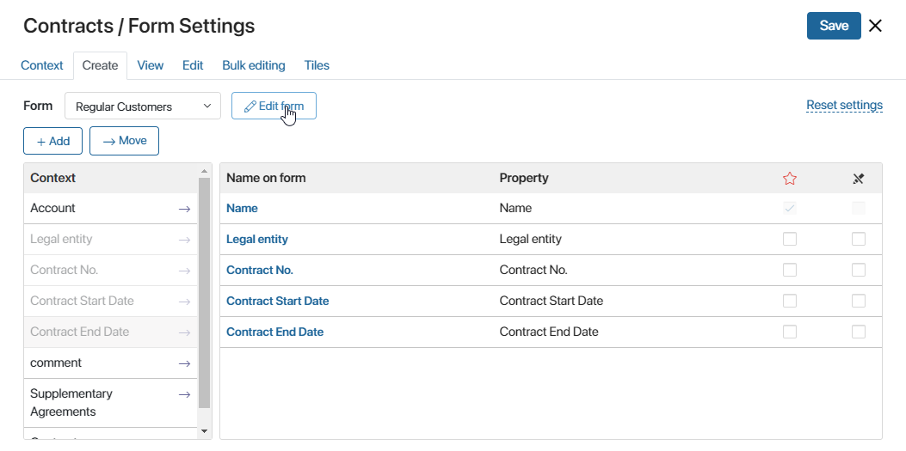
- To edit an already existing template, click Edit form on the desired tab.
You can also access the created template by selecting Interfaces from the workspace or app menu, or in Administration > Interfaces. Then click the name of the form.
Designer tabs
The low-code designer where forms are configured has several tabs: Template, Context, Scripts, History, Settings, and Files.
- Template. Here you can configure your form: edit the header, change the layout of elements, and add new buttons, widgets, and properties. You can make the form dynamic. In this case, the fields will be hidden or shown to the users depending on the data they enter. You can learn more in Dynamic forms.
- Context. Here you can add properties that will be used in the template and scripts. To add a new property, click +Add and specify its parameters.
- Scripts. Here you can write a script to determine the widget's behavior, for example, to display a pop-up when the user hovers the mouse over a certain area of the form or page. You can learn more in Scripts in widgets and BRIX TS SDK.
- History. This tab displays all the published versions of a configured app, task, or start event form. You can view the time, author, and comment left upon publication, as well as restore one of the old versions. To do that, select the version in the list and click Apply version, then confirm your action. The current draft will be replaced. The changes that you have saved but haven't yet published will be lost. To make this restored version available to users, publish it. When working with a task form template, you need to publish the business process that the task belongs to.
- Settings. Here you can
- Disable display of the widget with validation errors in case of incorrect filling of fields on the form.
- Allow placing a custom widget on the top or sidebar and configure widget display in the interface designer.
- Specify script functions that you want to apply when a widget is initialized, when conditions for its display are checked, or when the form is validated. The default functions for displaying a widget are
onInit(),canRender()andonLoad(), but you can replace them with other functions. - Allow global constants and widgets from system workspaces to be used in scripts.
- Files. Here you can add libraries and custom functions in Javascript to use them in your scripts.
You can learn more about each tab in Designer tabs.
Add a widget to the form
A widget is an interface element with particular functionality for such activities as uploading a file, displaying instructions, activity streams, user lists, etc. Widgets help create user-friendly forms. They allow you to design the layout of fields, add buttons, and set up interface behavior for user interactions.
To add a widget to your form, go to the Template tab. You ca place a widget:
- In the main part of the form. Drag the widget from the right panel onto the form template.
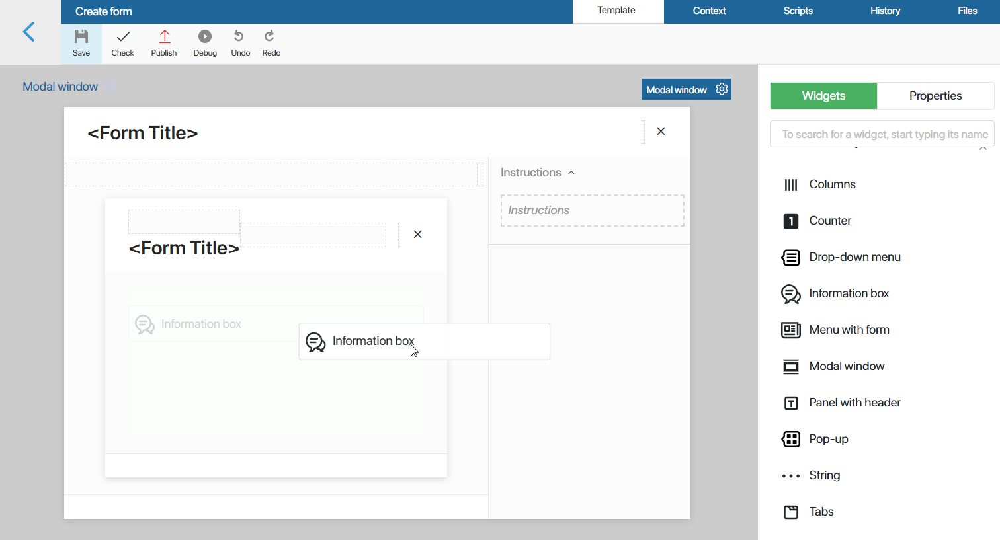
- On the sidebar. Drag the widget to the sidebar or click +Widget. Placing a custom widget on the sidebar is enabled when you create it.
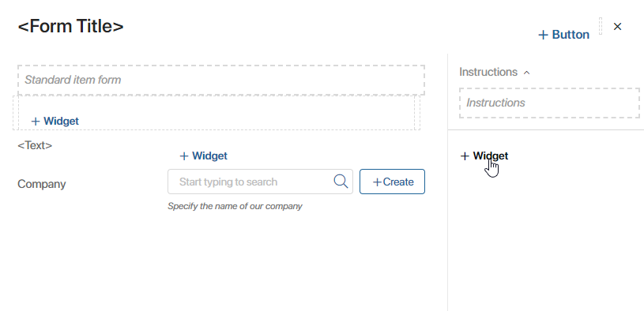
- On the top panel. Drag the widget to the top panel or press + Button. Placing a custom widget on the top panel can be enabled when creating it.
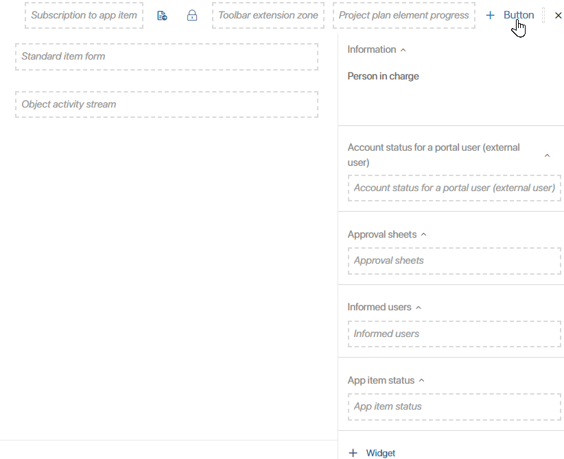
- The widget settings will open. You can read more about the configuration of each widget in Widget types.
When working with widgets you can use the Undo and Redo buttons available in the top toolbar.
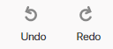
The Undo button cancels you last action such as adding, moving, deleting a widget, or changing its settings. The Redo button repeats the canceled action.
If you are configuring a complex interface with a large number of widgets, you can use navigation to find the required item fast.
Hide the side panel from the template
Every template has a default sidebar. To hide it, click on an empty space on the canvas: the Modal window label will appear in the top tight corner. Click on the gear icon on the label and disable the Show sidebar option in the settings. Save the changes. The sidebar will no longer be displayed.
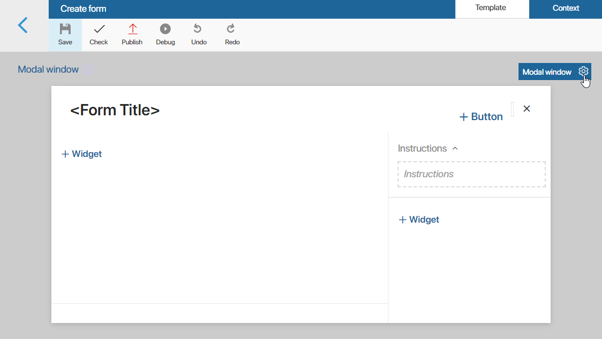
You can also bind the sidebar visibility to a context variable. It will then be shown or hidden depending on the variable value. You can read more about it in System widget settings.
Add a property to the form
You can fill a template with app or process properties, system properties of widgets, as well as variables added on the Context tab. For the variable of the App or Users type with the One subtype, you can use nested fields.
Go to the Properties panel on the right-hand side of the Template tab. Then drag a property to the main canvas or the side panel.
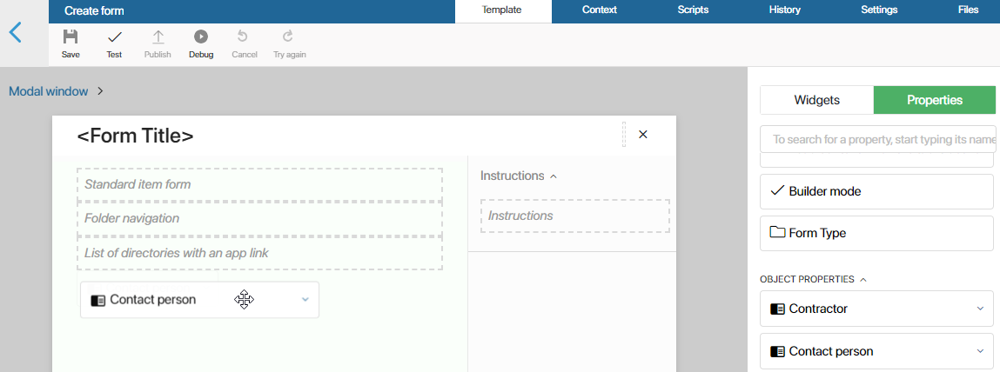
When dragged to the canvas, properties are placed into a container called Field. A Field can be placed inside other elements.
Hide property name
In order to make the form more lightweight, you can hide:
- names of properties, leaving just the fields;
- empty fields that are read-only.
To do that:
- Select the Field that contains the property that you have added to the form. Then click on the gear icon.
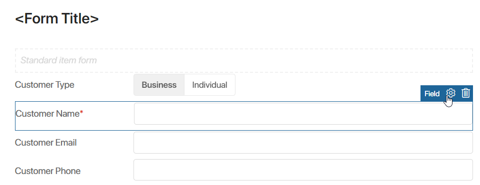
- In the window that opens:
- deselect the Show name on form box if you want to display the field without a label;
- select the Hide if the field is empty box if you want to hide an empty field marked as Read Only.
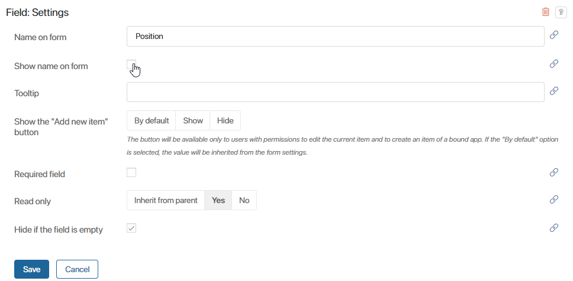
- Click Save.
Please note that this option is only available for the properties that you dragged from the Properties panel and placed in the Field container.
Check and apply a template
The top toolbar has controls for working with a completed template:
- Check. You can check the customized widgets for errors;
- Debug. This control is available only for app form templates. It allows you to check what the form will look like in the interface. You can learn more in Debugging an interface;
To apply the template that you have configured, click Save in the top toolbar.
For app forms, additionally click Publish so that widgets become available to users. When publishing, you can leave a comment about the changes that you have made.
Each published version is shown on the History tab of the interface designer. Here you can see brief information about each version and restore one of the versions. Read more in Interface designer.
Reuse a template
You can reuse a template multiple times. For example, a template configured for the view form can be used for the edit form as well. To reuse a template simply select it in the drop-down list.
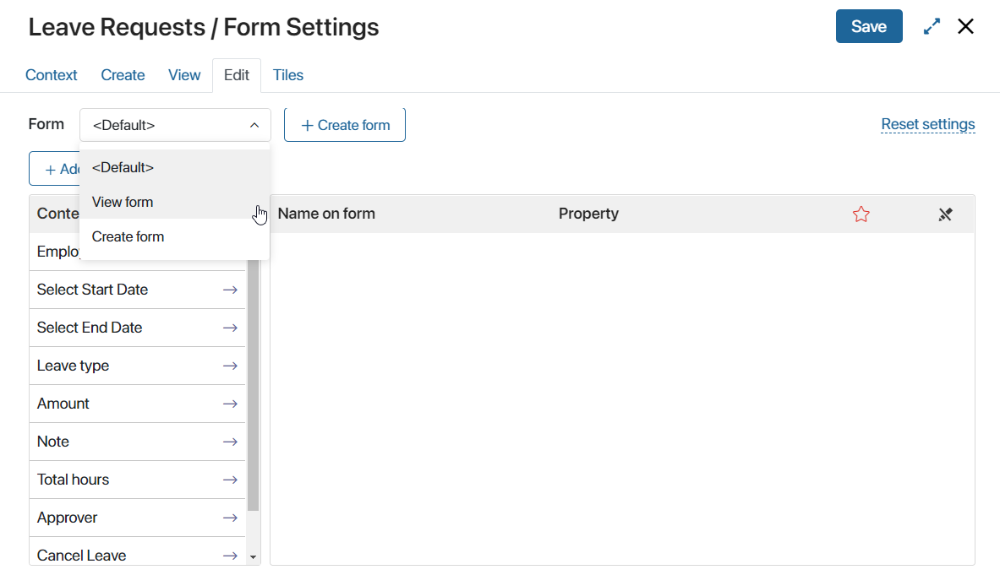
After that, such elements as widgets, buttons, and headers added to the view form will be displayed on the edit form as well.
However, if the lists of fields on the Create and Edit tabs are different, the fields on the forms will also differ even if the same template is used.
If you want to use the same set of fields on both the Create and Edit forms, edit the template. Click Edit form and delete the Standard form widget since it is the one that displays the fields from the Create and Edit tabs.
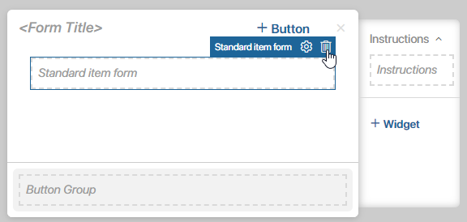
Then open the Properties tab and add the fields that you need to the canvas. With such settings, both the Create and Edit forms will feature the same set of fields.
In a similar way, you can reuse a process task template in other tasks of the process.
By creating one template for several app forms you can use a script to set different conditions for displaying widgets on these forms.
Found a typo? Select it and press Ctrl+Enter to send us feedback